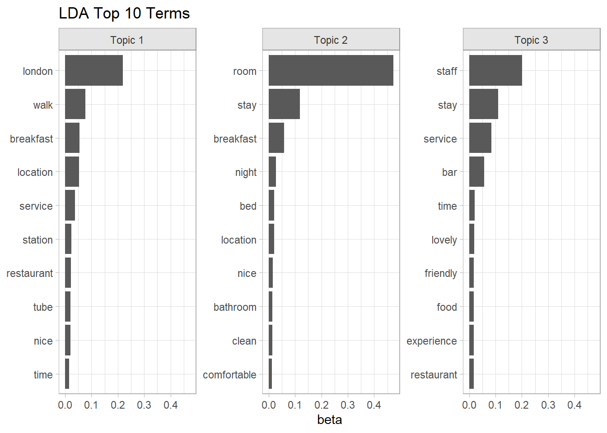

2.1 LDA
Latent Dirichlet allocation (LDA) is an instance of a general family of mixed membership models that decompose data into latent components. Latent refers to unidentified topics and Dirichlet refers to the type of distribution followed by the words in the the topics and by the topics in the documents.
Algorithm
LDA assumes each document is created by a generative process where topics are included according to probabilities and words are included in the topics according to probabilities. The LDA algorithm determines what those probabilities are. The algorithm is:
For each document \(d_i\), randomly assign each word \(w_j\) to one of the \(K\) topics. Note that \(w_j\) may be assigned to a different topic in different documents.
For each document, tabulate the number of words in each topic, a \(d \times K\) matrix. For each word, tabulate the sum of occurrences across all documents, a \(w \times K\) matrix.
Resample a single instance of a word from the corpus and remove it from the analysis, decrementing the document’s topic count and the word’s topic count.
Calculate the gamma matrix, \(\gamma\), and the beta matrix, \(\beta\).
- the gamma matrix is the probability distribution of topics for each document, \[p(t_k|d_i) = \frac{n_{ik} + \alpha}{N_i + K \alpha}\] were \(n_{ik}\) is the number of words in document \(i\) for topic \(k\), \(N_i\) is the total number of words in \(i\), and \(\alpha\) is a hyperparameter. For each \(d_i\), \(\sum_{k \in K} \gamma_{ik} = 1\).
- the beta matrix is the probability distribution of words for each topic, \[p(w_j|t_k) = \frac{m_{j,k} + \beta}{\sum_{j \in V}m_{j,k} + V\beta}\] where \(m_{j,k}\) is the corpus-wide frequency count of word \(w_j\) to topic \(k\), \(V\) is the number of distinct words in the corpus, and \(\beta\) is a hyperparameter. For each \(t_k\), \(\sum_{j \in V} \beta_{kj} = 1\).
Perform Gibbs sampling. Calculate the joint probability distribution of words for each document and topic, \(p(w_j|t_k,d_i) = p(t_k|d_i)p(w_j|t_k)\). Assign each word, \(w_j\), to the topic with the maximum joint probability.
Repeat steps 3-6 for all of the words in all of the documents.
Repeat steps 3-7 for a pre-determined number of iterations.
LDA thus has 3 hyperparameters: the document-topic density factor, \(\alpha\), the topic-word density factor, \(\beta\), and the topic count, \(K\). \(\alpha\) controls the number of topics expected per document (large \(\alpha\) = more topics). \(\beta\) controls the distribution of words per topic (large \(\beta\) = more words). Ideally, you want a few topics per document and a few words per topic, so \(\alpha\) and \(\beta\) are typically set below one. \(K\) is set using a combination of domain knowledge, coherence, and exclusivity.
Notice that LDA is a “bag of words” method. It does not consider the order of the tokens in the text, so where tokens are located what other tokens are nearby do not factor into the output.
Data Preparation
In addition to the cleaned text produced in Chapter 1, there are a few more data preparation tasks for LDA. Create a bag of words from the union of the word and bigram reviews to get all terms. Keep only the decent sized reviews (>= 25 words).
lda_dat <-
hotel_prep %>%
mutate(combined = paste(review_words, review_bigrams)) %>%
select(review_id, combined) %>%
unnest_tokens(output = "word", input = combined) %>%
mutate(.by = review_id, n = n()) %>%
filter(n >= 25) %>%
select(-n)
lda_dat %>% glimpse()## Rows: 1,790,643
## Columns: 2
## $ review_id <int> 2, 2, 2, 2, 2, 2, 2, 2, 2, 2, 2, 2, 2, 2, 2, 2, 2, 2, 2, 2, …
## $ word <chr> "pleasure", "stay", "hotel", "night", "recently", "hotel", "…The next step is optional. If this is a predictive model, create a train/test split. You might even weight the splitting by rating (if that is the outcome variable) to ensure proportional coverage.
hotel_split <- rsample::initial_split(hotel_prep, prop = 3/4, strata = review_id)
lda_train_0 <-
lda_dat %>%
inner_join(training(hotel_split) %>% select(review_id, rating), by = join_by(review_id))
lda_test <-
lda_dat %>%
inner_join(testing(hotel_split) %>% select(review_id, rating), by = join_by(review_id))
glimpse(lda_train_0)
## Rows: 1,342,642
## Columns: 3
## $ review_id <int> 4, 4, 4, 4, 4, 4, 4, 4, 4, 4, 4, 4, 4, 4, 4, 4, 4, 4, 4, 4, …
## $ word <chr> "stay", "rhodes", "hotel", "night", "location", "paddington"…
## $ rating <int> 4, 4, 4, 4, 4, 4, 4, 4, 4, 4, 4, 4, 4, 4, 4, 4, 4, 4, 4, 4, …
glimpse(lda_test)
## Rows: 448,001
## Columns: 3
## $ review_id <int> 2, 2, 2, 2, 2, 2, 2, 2, 2, 2, 2, 2, 2, 2, 2, 2, 2, 2, 2, 2, …
## $ word <chr> "pleasure", "stay", "hotel", "night", "recently", "hotel", "…
## $ rating <int> 5, 5, 5, 5, 5, 5, 5, 5, 5, 5, 5, 5, 5, 5, 5, 5, 5, 5, 5, 5, …Low frequency tokens impact the topic model analysis. 58% of the data is composed of tokens that appear <=3 times. Just use the high frequency tokens, the ones occurring at least 4 times in the training data. This is (hopefully) enough to learn topics from tokens that occur together in reviews.
Nagelkerke (2020) explains that TF-IDF, which combines the within-document token frequency and document frequency, is not always the best way to whittle down the token set. When documents are small, which is common in online reviews, the within document frequency is low and the IDF part is over-weighted.
lda_train_0 %>%
count(word, name = "token_n") %>%
mutate(token_n = if_else(token_n > 20, 20, token_n)) %>%
count(token_n) %>%
mutate(pct = n / sum(n), cum_pct = cumsum(pct)) %>%
ggplot(aes(x = token_n)) +
geom_col(aes(y = pct)) +
geom_line(aes(y = cum_pct)) +
scale_y_continuous(labels = percent_format(1)) +
labs(x = "Token Frequency", y = "Pct of Tokens", title = "Token Frequency")
lda_train <- lda_train_0 %>%
mutate(.by = word, corpus_token_n = n()) %>%
mutate(.by = c(review_id, word), review_token_n = n()) %>%
filter(corpus_token_n >= 4)
bind_rows(
`high freq words` = lda_train %>%
summarize(total_words = n(), distinct_words = n_distinct(word)),
`low freq words` = anti_join(lda_train_0, lda_train, by = join_by(review_id, word)) %>%
summarize(total_words = n(), distinct_words = n_distinct(word)),
.id = "partition"
) %>%
mutate(total_pct = total_words / sum(total_words) * 100,
distinct_pct = distinct_words / sum(distinct_words) * 100) %>%
select(partition, total_words, total_pct, distinct_words, distinct_pct)
## # A tibble: 2 × 5
## partition total_words total_pct distinct_words distinct_pct
## <chr> <int> <dbl> <int> <dbl>
## 1 high freq words 1316274 98.0 9637 41.9
## 2 low freq words 26368 1.96 13377 58.1Now we can create a document term matrix (DTM).
Again from Nagelkerke (2020), you might expect the document specific term frequency (review_token_n), however I use the overall token frequency corpus_token_n to give more emphasis to terms that are more frequent in general. Reviews are short compared to books or articles, so the probability of a token occurring repeatedly in a review is low.
Fit
There are several parameters you might tweak for the model fit. The biggest surprise is that you set the number of topics, k. This article explains the harmonic mean method for optimization, but Nagelkerke (2020) suggests sticking with the art vs science method and pick your own k.
The model fit took about 3 minutes to run. I ran it once then saved the result.
# system.time(lda_fit <- LDA(lda_dtm, k = 3))
# saveRDS(lda_fit, file = "input/lda_fit.RDS")
lda_fit <- readRDS(file = "input/lda_fit.RDS")The fitted object contains two matrices. The phi matrix is the distribution of tokens (cols) over topics (rows). The theta matrix is the distribution of documents (rows) over topics (cols). The row sum is 1 for each matrix (sum of topic probabilities, some of document probabilities). In each case, the values are probabilities that sum to 1 for each topic.
lda_phi <- posterior(lda_fit) %>% pluck("terms") %>% as.matrix()
dim(lda_phi)
## [1] 3 9526
sum(lda_phi[1, ])
## [1] 1
lda_theta <- posterior(lda_fit) %>% pluck("topics") %>% as.matrix()
dim(lda_theta)
## [1] 16032 3
sum(lda_theta[1, ])
## [1] 1The tidytext::tidy() function calculates the beta matrix then pivots-longer into a [topic, term, beta] data frame.
lda_topics <- tidy(lda_fit)
lda_topics %>%
mutate(topic = factor(paste("Topic", topic))) %>%
group_by(topic) %>%
slice_max(order_by = beta, n = 10) %>%
ungroup() %>%
ggplot(aes(x = beta, y = reorder_within(term, by = beta, within = topic))) +
geom_col() +
scale_y_reordered() +
facet_wrap(facets = vars(topic), scales = "free_y") +
labs(y = NULL, title = "LDA Top 10 Terms")
There is a downside to this evaluation. Popular words like room appear at or near the top in all three topics. You might want to look at relative popularity instead: the popularity within the topic divided by overall popularity. That’s problematic too because words that only appear in few reviews will pop to the top. What you want is a combination of both absolute term probability and relative term probability. LDAvis::serVis() can help you do that.
Unfortunately, the plot from LDAvis::serVis() is interactive and does not render in the RMarkdown notebook html, so below is just a screenshot of the code chunk output.
doc_length <- lda_train %>% count(review_id) %>% pull(n)
# vocabulary: unique tokens
vocab <- colnames(lda_phi)
# overall token frequency
term_frequency <- lda_train %>% count(word) %>% arrange(match(word, vocab)) %>% pull(n)
# create JSON containing all needed elements
json <- LDAvis::createJSON(lda_phi, lda_theta, doc_length, vocab, term_frequency)
LDAvis::serVis(json)
Exclusivity
Generally, the greater the number of topics in a model, the lower the quality of the smallest topics. One way around this is simply hiding the low-quality topics. The coherence measure (Mimno et al. 2011) evaluates topics.